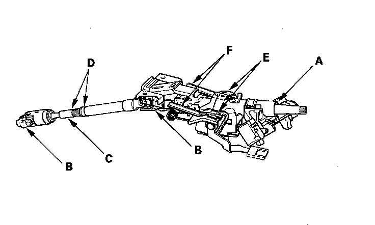

Steering Column: Testing and Inspection
Steering Column/Tilt/Telescopic Inspection^ Check the steering column ball bearing (A) and the steering joint bearings (B) for play and proper movement. If any bearing is noisy or has excessive play, replace the steering column as an assembly.
^ Check the lower slide shaft (C) for smooth movement in and out. If the lower slide shaft is removed, slip it into the upper shaft by aligning the paint or stamped marks (D). If it sticks or binds, replace the steering column as an assembly.
^ Check the sliding capsules (E) for distortion or breakage. If there is distortion or breakage, replace the steering column as an assembly.
^ Check the tilt mechanism and telescopic mechanism for movement and damage.
^ Check the absorbing plates (F) for distortion or breakage. If there is distortion or breakage, replace the steering column as an assembly.
